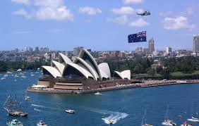

- 현지와리암
- Australia
- Canada
- United Kingdom
Australia

Australia, officially the Commonwealth of Australia, is a sovereign country comprising the mainland of the Australian continent,
the island of Tasmania, and numerous smaller islands.
With an area of 7,617,930 square kilometres (2,941,300 sq mi),Australia is the largest country by area in Oceania and the world's sixth-largest country.
Australia is the oldest,[15] flattest,[16] and driest inhabited continent,[17][18] with the least fertile soils.[19][20] It is a megadiverse country,
and its size gives it a wide variety of landscapes and climates, with deserts in the centre, tropical rainforests in the north-east, and mountain ranges in the south-east.